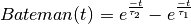
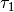
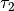
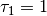
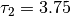

Pypsy.signal package¶
Submodules¶
Pypsy.signal.analysis module¶
-
Pypsy.signal.analysis.bateman(time, onset=0, amplitude=0, tau1=0.5, tau2=3.75)[source]¶ Returns an
numpy.ndarraythat represents the value of the Bateman function. The Bateman function is evaluated overtime, and is parameterized bytau1andtau2.The Bateman function is:

Parameters: - time (array_like) – The times (in seconds) at which the Bateman function should be evaluated
- onset (float) – The time (in seconds) of the maximum amplitude of the Bateman function
- amplitude (float) – The maximum amplitude of the Bateman function
- tau1 (float) – The  parameter for the Bateman function
- tau2 (float) – The  parameter for the Bateman function
Returns: out – The values of the Bateman function evaluated at each point in
timeReturn type: numpy.ndarrayRaises: ValueError– Iftau1andtau2are not both greater than zero, or if they are equalTypeError– Iftimeis not array-like (cannot be converted to anumpy.ndarrayusingnumpy.array())
Examples
>>> bateman_time = np.linspace(0, 20 - (1. / 25), 20 * 25) >>> evaluated = bateman(bateman_time, onset=4, amplitude=0.5, tau1=0.5, tau2=3.75) >>> np.where(evaluated == np.max(evaluated))[0][0] 129 >>> np.abs(0.5 - evaluated[129]) < 0.001 True
-
Pypsy.signal.analysis.bateman_gauss(time, onset=0, amplitude=0, tau1=3.75, tau2=0.5, sigma=0)[source]¶ Returns an
numpy.ndarraythat represents the value of the Bateman function. The Bateman function is evaluated overtime, and is parameterized bytau1andtau2.The Bateman function is:
The output of the Bateman function is smoothed by convolution with a Gaussian window.
Parameters: - time (array_like) – The times (in seconds) at which the Bateman function should be evaluated
- onset (float) – The time (in seconds) of the maximum amplitude of the Bateman function
- amplitude (float) – The maximum amplitude of the Bateman function
- tau1 (float) – The parameter for the Bateman function.
- tau2 (float) – The parameter for the Bateman function.
- sigma (float) – The
 to be used for the Gaussian smoothing function
to be used for the Gaussian smoothing function
Returns: out – The values of the Gaussian-smoothed Bateman function evaluated at each point in
timeReturn type: numpy.ndarrayRaises: ValueError– Iftau1andtau2are not both greater than zero, or if they are equal.TypeError– Iftimeis not array-like (cannot be converted to anumpy.ndarrayusingnumpy.array())
-
Pypsy.signal.analysis.fit_error(data, fit, npar, errortype='MSE')[source]¶ Calculate the fit error for a model.
Parameters: Returns: out – The model error
Return type:
-
Pypsy.signal.analysis.get_peaks(data)[source]¶ Returns the indices of the minima and maxima in
data. Minima and maxima are identified by searching for sign changes (zero crossings) in the first differential.There are two important caveats to this function. First, if the last extremum is a maximum, the last index of the signal is returned as the final minimum. Second, because this function looks for sign changes in the differential of
data, if the last index of the signal is a maximum, it will not be returned, as there is no successive value to generate a further sign change in the differential.Parameters: data (array_like) – The signal from which to extract peaks Returns: - minima (
numpy.ndarray) – Each entry in the minima array is an index of a minimum in the original signal. - maxima (
numpy.ndarray) – Each entry in the maxima array is an index of a minimum in the original signal.
Raises: TypeError– Ifdatais not array-like (cannot be converted to anumpy.ndarrayusingnumpy.array())Examples
>>> dc = np.array([1., 1, 1, 1, 1]) >>> minima, maxima = get_peaks(dc) >>> minima.size 0 >>> maxima.size 0 >>> triangle = np.array([-1., 0, 1, 0, -1, 0, 1]) >>> minima, maxima = get_peaks(triangle) >>> list(minima) [0, 4] >>> list(maxima) [2]
- minima (
-
Pypsy.signal.analysis.interimpulse_fit(driver, kernel, minima, maxima, original_time, original_signal, original_fs)[source]¶ Estimate the tonic EDA driver and signal. The mean (or median) of data between impulses is used to estimate the tonic driver. This driver is then convolved with the kernel to produce the tonic signal.
Parameters: - driver (array_like) – The composite EDA driver
- kernel (array_like) – The kernel impulse response
- minima (numpy.ndarray) – The minima in the composite EDA driver
- maxima – The maxima in the composite EDA driver
- original_time (array_like) – The timestamps of the original EDA signal
- original_signal (array_like) – The original EDA signal
- original_fs (float) – The sample rate of the original EDA signal
Returns: - tonic_driver (numpy.ndarray) – The estimated tonic EDA driver
- tonic_data (numpy.ndarray) – The estimated tonic EDA signal
-
Pypsy.signal.analysis.segment_driver(data, remainder, threshold, window_size)[source]¶ Segment a signal into individual impulse_segments. Only those impulse_segments that are greater in amplitude than
thresholdare extracted. Also, extract corresponding overshoot data from a remainder signal for each extracted impulse. The maximum width of segments (in samples) is governed bywindow_size.Parameters: - data (array_like) – The signal to be segmented
- remainder (array_like) – A remainder signal from which to extract overshoot data
- threshold (float) – The criterion amplitude for determining those impulse_segments that should be extracted. Impulses are only
extracted if the absolute amplitude difference between the segment peak and its preceding and/or following
minimum is greater than
threshold. - maximum_width (int) – The maximum width of a segment in samples
Returns: - onsets (numpy.ndarray) – A vector of time indices in the signal that correspond to the start points of the impulse windows
- impulse_segments (list(numpy.ndarray)) – A list of segments of the signal containing a vector for each impulse
- overshoot_segments (list(numpy.ndarray)) – A list of segments of the remainder signal corresponding to overshoot
- impulse_minima (numpy.ndarray) –
A matrix of time indices of the data_minima surrounding the data_maxima in
impulse_maxima–the first column is the timestamp of the data_minima preceding the corresponding impulse inimpulse_maximaand the second column is the timestamp of the data_minima following the corresponding impulse inimpulse_maxima - impulse_maxima (numpy.ndarray) –
A vector of time indices of the data_maxima of each impulse in
onsets
Raises: TypeError– If eitherdataorremainderare not array-like (cannot be converted to anumpy.ndarrayusingnumpy.array())Examples
>>> d = np.array([0, 0, 0.4, 0, 1, 0, 0.3, 0, 0]) >>> r = np.array([0, 0, 0, 0, 0.5, 0.6, 0, 0, 0]) >>> onsets, impulse_segments, overshoot_segments, impulse_minima, impulse_maxima = segment_driver(d, r, 0.5, 4) >>> onsets array([3]) >>> impulse_segments [array([ 0., 1., 0., 0.])] >>> overshoot_segments [array([ 0. , 0.5, 0.6, 0. ])] >>> impulse_minima array([[3, 5]]) >>> impulse_maxima array([4])
>>> d = np.array([0, 0, 0.4, 0, 1, 0, 0.3, 0, 0]) >>> r = np.array([0, 0, 0, 0, 0.5, 0.6, 0, 0, 0]) >>> onsets, impulse_segments, overshoot_segments, impulse_minima, impulse_maxima = segment_driver(d, r, 0.3, 4) >>> onsets array([1, 3]) >>> impulse_segments [array([ 0. , 0.4, 0. , 0. ]), array([ 0., 1., 0., 0.])] >>> overshoot_segments [array([ 0., 0., 0., 0.]), array([ 0. , 0.5, 0.6, 0. ])] >>> impulse_minima array([[1, 3], [3, 5]]) >>> impulse_maxima array([2, 4])
>>> d = np.array([0, 0, 0.4, 0, 1, 0, 0.3, 0, 0]) >>> r = np.array([0, 0, 0, 0, 0.5, 0.6, 0, 0, 0]) >>> onsets, impulse_segments, overshoot_segments, impulse_minima, impulse_maxima = segment_driver(d, r, 1.5, 4) >>> onsets array([], dtype=int64) >>> impulse_segments [] >>> overshoot_segments [] >>> impulse_minima array([], dtype=int64) >>> impulse_maxima array([], dtype=int64)
-
Pypsy.signal.analysis.significant_peaks(data, minima, maxima, threshold)[source]¶ Find all peaks in a vector that are greater than a threshold value.
Parameters: - data (array_like) – A signal vector
- minima (array_like) – A vector of the indices of minima in
data - maxima (array_like) – A vector of the indices of maxima in
data - sig (float) – The absolute amplitude above which maximum are to be considered with respect to to their preceding and following minima
Returns: - significant_minima (
numpy.ndarray) – A two-dimensional array. Each ‘row’ in the array corresponds to its respective entry in the significant_maxima array. The first ‘column’ in the row is the index of the minimum that immediately precedes the maximum referred to in significant_maxima. The second ‘column’ in the row is the index of the minimum that immediately follows the maximum referred to in significant_maxima. Note that when there are no significant minima, this is an empty, single-dimensional array. - significant_maxima (
numpy.ndarray) – The indices of all maxima for which the absolute amplitude difference between the preceding and/or following minimum is greater thanthreshold
Raises: TypeError– If any ofdata,minima, ormaximaare not array-like (cannot be converted to anumpy.ndarrayusingnumpy.array())Examples
>>> sig = np.array([0., 0.25, 0, 0.5, 0, 1, 0, 0.5, -0.2, 0, 0.25, 0]) >>> minima, maxima = get_peaks(sig) >>> sig_minima, sig_maxima = significant_peaks(sig, minima, maxima, 0.6) >>> sig_minima[0] array([4, 6]) >>> sig_minima[1] array([6, 8]) >>> sig_maxima array([5, 7]) >>> sig_minima, sig_maxima = significant_peaks(sig, minima, maxima, 1.) >>> sig_minima array([], dtype=int64)
>>> sig = np.array([0, 1, 0]) >>> minima, maxima = get_peaks(sig) >>> minima array([0, 2]) >>> maxima array([1]) >>> sig_minima, sig_maxima = significant_peaks(sig, minima, maxima, 0.1) >>> sig_minima array([0, 2]) >>> sig_maxima array([1])
Pypsy.signal.utilities module¶
-
Pypsy.signal.utilities.calculate_sample_rate(signal)[source]¶ Calculate the sample rate of a signal.
Parameters: signal (Pypsy.signal.Signal) – The signal for which to calculate the sample rate Returns: out – The calculated sample rate Return type: float Raises: ValueError– If the data vector of the signal is less than two samples in lengthExamples
>>> time = np.array([0, 0.1, 0.2]) >>> data = np.array([0., 0, 0]) >>> signal = Pypsy.signal.Signal(data=data, time=time) >>> calculate_sample_rate(signal) 10.0
-
Pypsy.signal.utilities.closest_time_index(time, target_time)[source]¶ From a vector of monotonically-increasing timestamps, find the index of the timestamp closest to a target timestamp.
Parameters: - time (array_like) – The vector of timestamps
- time0 (float) – The target timestamp
Returns: - index (int) –
The index of the timestamp in
timethat is closest totarget_time - closest_time (float) –
The timestamp in
timeat this index
Raises: TypeError– Iftimeis not array-like (cannot be converted to anumpy.ndarrayusingnumpy.array())Examples
>>> timestamps = np.array([0, 0.1, 0.2, 0.3]) >>> index, time = closest_time_index(timestamps, 0.1) >>> index 1 >>> time == timestamps[index] True >>> index, time = closest_time_index(timestamps, 0.101) >>> index 1 >>> time == timestamps[index] True >>> index, time = closest_time_index(timestamps, 0.1501) >>> index 2 >>> time == timestamps[index] True >>> index, time = closest_time_index(timestamps, 0.5) >>> index 3 >>> time == timestamps[index] True >>> index, time = closest_time_index(timestamps, -0.1) >>> index 0 >>> time == timestamps[index] True >>> timestamps = np.array([-0.1, 0, 0.1]) >>> index, time = closest_time_index(timestamps, -0.1) >>> index 0 >>> time == timestamps[index] True >>> timestamps = np.array([]) >>> index, time = closest_time_index(timestamps, 2) >>> index == None True >>> time == None True
-
Pypsy.signal.utilities.nonzero_portion(data, threshold, exponent, sample_rate)[source]¶ Compute the portion of
datathat is nonzero. This portion is computed with
where
 is the duration of
is the duration of datawhere the absolute amplitude is greater thanthreshold, is
is
exponent, and is the total duration of
is the total duration of data.Parameters: Returns: out – The result of the above formula
Return type: Examples
>>> result = nonzero_portion(np.array([1, 1, 0.1, 0.3, 4, 5, 6, 1, 7, 8, 1, 1, 0.2]), 0.1, 1, 5) >>> np.abs(result - 0.92) < 0.005 True
-
Pypsy.signal.utilities.resample_signal(signal, target_fs)[source]¶ Resample the data vector of a signal at the specified sample rate using linear interpolation. This function modifies the signal in place.
Parameters: - signal (Pypsy.signal.Signal) – The signal to be resampled
- target_fs (float) – The target sample rate in Hertz
Returns: out – The resampled signal
Return type: Examples
>>> time = np.array([0., 0.1, 0.2]) >>> data = np.array([-1., 0., 1.]) >>> signal = Pypsy.signal.Signal(data, time) >>> resampled_signal = resample_signal(signal, 20) >>> np.sum(np.array([0, 0.05, 0.1, 0.15, 0.2]) - resampled_signal.time) < 0.001 True >>> np.sum(np.array([-1, -0.5, 0, 0.5, 1]) - resampled_signal.data) < 0.001 True
>>> time = np.array([0, 0.04, 0.08, 0.12, 0.16]) >>> data = np.array([-1., 0, 1, 0, -1]) >>> signal = Pypsy.signal.Signal(data, time) >>> resampled_signal = resample_signal(signal, 25.0) >>> resampled_signal.time array([ 0. , 0.04, 0.08, 0.12, 0.16])
-
Pypsy.signal.utilities.smooth(data, window_width, windowtype='gauss')[source]¶ Smooth a signal by convolving it with one of a selection of window types.
Parameters: Returns: out – A smoothed copy of
dataReturn type: numpy.ndarrayRaises: TypeError– Ifdatais not array-like (cannot be converted to anumpy.ndarrayusingnumpy.array())
-
Pypsy.signal.utilities.subrange_indices(time, start_time, end_time)[source]¶ Given start and end times
start_timeandend_time, find the indices of the timestamps intimethat are within these times.Parameters: Returns: out – The subrange of indices of those timestamps in
timethat begins with the time closest tostart_timeand ends with the time closest tostart_timeReturn type: numpy.ndarray
Examples
>>> times = np.array([0, 0.1, 0.2, 0.3, 0.4, 0.5]) >>> subrange_indices(times, 0, 1) array([0, 1, 2, 3, 4, 5]) >>> subrange_indices(times, 0.05, 0.1) array([1]) >>> subrange_indices(times, 0.1, 0.15) array([1]) >>> subrange_indices(times, 0.05, 0.25) array([1, 2, 3]) >>> subrange_indices(times, 0.45, 0.5) array([5])
Module contents¶
-
class
Pypsy.signal.EDASignal(data, time)[source]¶ Bases:
Pypsy.signal.SignalEDASignal represents an electrodermal activity signal. It includes facilities for the decomposition of electrodermal activity into its tonic and phasic components. These facilities are a port of Ledalab from Ledalab from MATLAB.
Parameters: - data (
numpy.ndarray) – The signal’s data.data[x]is the value of the signal attime[x]. - time (
numpy.ndarray) – The times (in seconds) at which the signal was sampled.time[x]is the time at which the measure of the signal atdata[x]was taken.
-
phasic_data¶ numpy.ndarrayThe phasic EDA component. This array is populated by
Pypsy.signal.EDASignal.decompose_signal().
-
phasic_driver¶ numpy.ndarrayThe driver of the phasic EDA component. This array is populated by
Pypsy.signal.EDASignal.decompose_signal()
-
tau¶ numpy.ndarrayThe and parameters used to decompose the signal. These parameters are initially  and , and are automatically adjusted when
Pypsy.signal.EDASignal.decompose_signal()is called withoptimize=True.
-
tonic_data¶ numpy.ndarrayThe tonic EDA component. This array is populated by
Pypsy.signal.EDASignal.decompose_signal().
-
tonic_driver¶ numpy.ndarrayThe driver of the tonic EDA component. This array is populated by
Pypsy.signal.EDASignal.decompose_signal().
Examples
>>> data = [1, 2, 3] >>> time = [0.1, 0.2, 0.3] >>> sig = EDASignal(data, time)
-
decompose_signal(optimize=False)[source]¶ Decompose the EDA signal into its tonic and phasic components. This decomposition is identical to the continuous analysis performed by Ledalab.
Parameters: optimize (bool) – When True, the parameters inself.tauare optimized to minimize error. WhenFalse, the current values ofself.tauare used for decomposition.
-
classmethod
from_file(path)[source]¶ Deserializes an
EDASignalfrom the file atpath.Parameters: path (str) – A path to the file at which an
EDASignalwas serialized usingPypsy.signal.EDASignal.to_file()Returns: out – An instantiated
EDASignalReturn type: Raises: FileNotFoundError– If no file exists atpathRuntimeError– If the file atpathdoes not contain a validEDASignal
Examples
>>> sig = EDASignal.from_file('tests/test.eda_signal') >>> type(sig) <class 'Pypsy.signal.EDASignal'>
>>> EDASignal.from_file('tests/__init__.py') Traceback (most recent call last): ... RuntimeError: No valid signal found in 'tests/__init__.py'
>>> EDASignal.from_file('tests/nonexistent.eda_signal') Traceback (most recent call last): ... FileNotFoundError: [Errno 2] No such file or directory: 'tests/nonexistent.eda_signal'
-
to_file(path)[source]¶ Serializes an
EDASignalin a file stored atpath.Parameters: path (str) – The path at which to store the serialized signal. Examples
>>> data = np.random.rand(2) >>> time = np.array([0.1, 0.2]) >>> e = EDASignal(data, time) >>> e.composite_driver = np.random.rand(2) >>> e.composite_driver_remainder = np.random.rand(2) >>> e.data = np.random.rand(2) >>> e.kernel = np.random.rand(2) >>> e.phasic_data = np.random.rand(2) >>> e.phasic_driver = np.random.rand(2) >>> e.phasic_driver_raw = np.random.rand(2) >>> e.tau = np.random.rand(2) >>> e.time = np.random.rand(2) >>> e.tonic_data = np.random.rand(2) >>> e.tonic_driver = np.random.rand(2) >>> e.error['mse'] = np.random.rand() >>> e.error['rmse'] = np.random.rand() >>> e.error['discreteness'] = np.random.rand() >>> e.error['negativity'] = np.random.rand() >>> e.error['compound'] = np.random.rand() >>> e.to_file('tests/test.eda_signal') >>> e1 = EDASignal.from_file('tests/test.eda_signal') >>> np.all(e.composite_driver == e1.composite_driver) True >>> np.all(e.composite_driver_remainder == e1.composite_driver_remainder) True >>> np.all(e.data == e1.data) True >>> np.all(e.kernel == e1.kernel) True >>> np.all(e.phasic_data == e1.phasic_data) True >>> np.all(e.phasic_driver == e1.phasic_driver) True >>> np.all(e.phasic_driver_raw == e1.phasic_driver_raw) True >>> np.all(e.tau == e1.tau) True >>> np.all(e.time == e1.time) True >>> np.all(e.tonic_data == e1.tonic_data) True >>> np.all(e.tonic_driver == e1.tonic_driver) True >>> e.error['mse'] == e1.error['mse'] True >>> e.error['rmse'] == e1.error['rmse'] True >>> e.error['discreteness'] == e1.error['discreteness'] True >>> e.error['negativity'] == e1.error['negativity'] True >>> e.error['compound'] == e1.error['compound'] True
- data (
-
class
Pypsy.signal.Signal(data, time)[source]¶ Bases:
objectSignal represents a basic signal and timestamps for this signal.
Parameters: - data (
numpy.ndarray) – The signal’s data.data[x]is the value of the signal attime[x]. - time (
numpy.ndarray) – The times (in seconds) at which the signal was sampled.time[x]is the time at which the measure of the signal atdata[x]was taken.
-
data¶ numpy.ndarrayThe signal’s data.
data[x]is the value of the signal attime[x].
-
time¶ numpy.ndarrayThe times (in seconds) at which the signal was sampled.
time[x]is the time at which the measure of the signal atdata[x]was taken.
-
original_data¶ numpy.ndarrayThe data with which the signal was originally instantiated
-
original_time¶ numpy.ndarrayThe times (in seconds) at which the signal was sampled with which the signal was originally instantiated
Raises: ValueError– Ifdataandtimeare not the same lengthTypeError– TypeError If either oftimeordataare not array-like (cannot be converted to anumpy.ndarrayusingnumpy.array())
Examples
>>> data = [0, 1, 2] >>> time = [0.0, 0.1, 0.2] >>> sig = Signal(data, time) >>> sig.data.tolist() == data True >>> sig.time.tolist() == time True
>>> sig.data[0] = 15 >>> sig.data.tolist() [15.0, 1.0, 2.0] >>> sig.original_data.tolist() == data True
>>> Signal(data, time[:-1]) Traceback (most recent call last): ... ValueError: data and time must be the same length.
>>> Signal(data, None) Traceback (most recent call last): ... ValueError: data and time must be the same length.
-
data= array([], dtype=float64)
-
time= array([], dtype=float64)
- data (